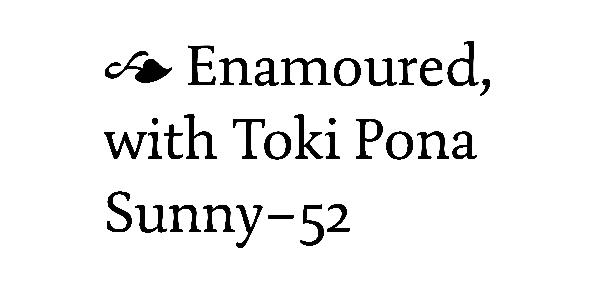
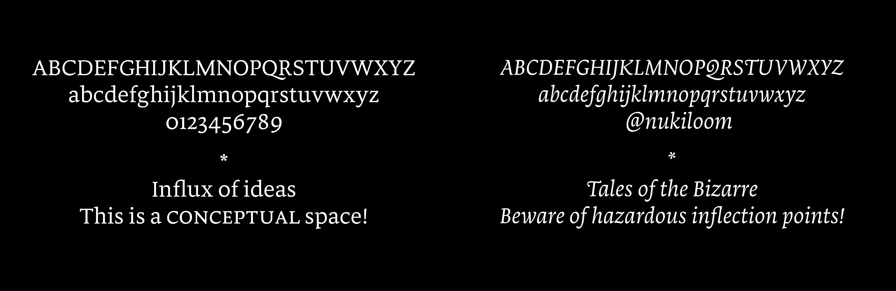
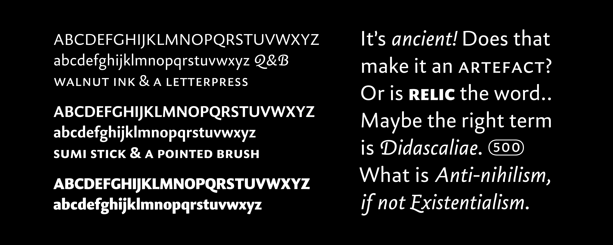
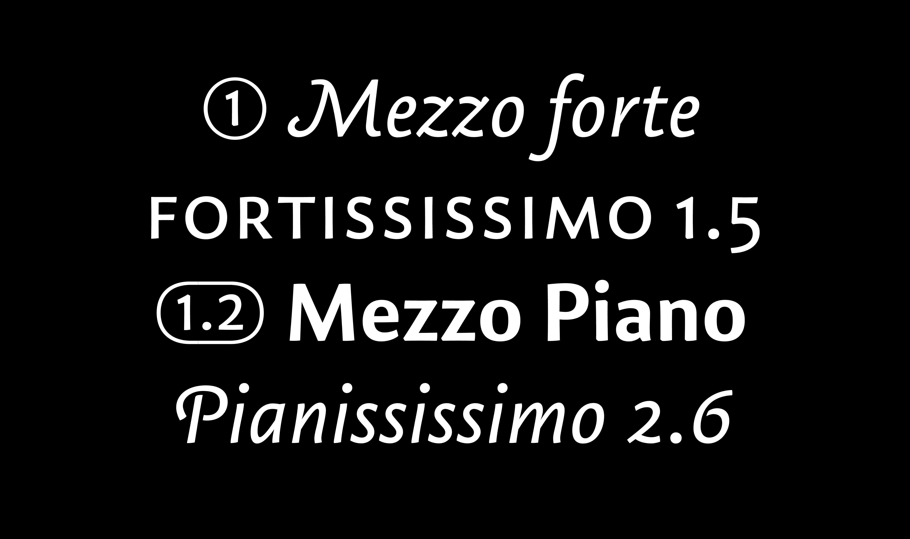

Nu (2003—now). Graphic design student at the Royal Academy of Art, The Hague (KABK). I mostly work on typeface design and typography.
+ −
Solera
•
Lettering, type design•
Ongoing, II 2024—





Solera is still early on in its making. It’s based on a typeface I designed in late 2023 as part of practical research into Frank Blokland’s doctoral thesis.
The project was supervised by Frank himself and the resulting typeface proved suitable for text typesetting but because it was executed digitally in its entirety, it was more mechanical than I wanted it to be.
This continuation, working name Solera, aims to breathe humanity into the project by re-designing it on paper with the same original restrictions; the character widths and stem placements are pre-determined and details of characters are designed to balance the typeface without moving sidebearings. This time the design would be anti-mechanical, based predominantly on hand-drawings. No straight lines allowed. It draws some inspiration from Elmo van Slingerland's Dorian and Jenson's 1470 roman cut.
Of course, this is just the first step; if the spacing restrictions get in the way of the project, they will be changed.
Ongoing project, II 2024–
Digital tools: Glyphs 3, DTL FoundryMaster
+ −
Hammer & chisel stone-carving
•
Ongoing, XI 2023—

In the first half of 2023 I read The Origin of the Serif by Edward Catich and immediately started practicing the ancient Roman brush caps. In the second half of the year, an opportunity presented itself to further the interest: attending the stone carving class in the Type & Media Master's course, overseen by Françoise Berserik.
Although the output is still somewhat crude, stone-carving turned out to be great practice for drawing detail and shaping characters through volume, inside-out.
I intend to continue working on my existing stones and eventually new ones in my spare time.
Ongoing project, XI 2023–
Tools: 8mm and 10mm tungsten chisels, 500g hammer
+ −
Fundamenta
•
Type design•
IX 2023–XI 2023

The Graphic Design department of the KABK has a recent tradition of a student-designed newspaper published every Open Day, one designed with primarily images and typefaces of students.
As I was already developing the roman of Fundamenta at that time, I was asked if I could finish it within 4 weeks, complete with a workable italic. This turned out to be an intense and fast project given that I never designed an italic before.
Fundamenta is something of a Dutch serif, heavily drawing from the broad nib, with shallow and pragmatic arches. Some details in the roman are inspired by the work of Frederic W. Goudy and Bram de Does. The italic draws inspiration from de Does, Jan van Krimpen, and several Renaissance punchcutters, notably Francesco Griffo.
IX 2023–XI 2023
Digital tools: Glyphs 3, DTL FoundryMaster, DTL OTMaster, RoboFont
Credits: Newspaper design by Benaiah French, Daria Glushkova, Maria Filatova, Cliff Vonk
+ −
Didai
•
Type design•
I 2023–


During the winter of 2023 I was confronted with a blank slate to work on. I decided to start with some rough drawings to determine a project, and the first set turned into the idea for what I originally called Didascaliae: a relatively high-contrast humanist sans-serif, no straight lines, with formal features but a playful execution. Intended use: book captions.
As the typeface did not have enough bizarre qualities yet, I decided to give it an optical size axis that works in reverse of the norm; the higher optical sizes feature less contrast to make them render similar to the original when printing in caption sizes.
I call the curvature behaviour ‹dysfunctional swing› because its avoidance of straight lines is purely a technical challenge. In general this typeface finds itself at a crossroads of many ideas. I think its most distinctive usage is as a display face for all-caps. As the uppercase is roughly proportioned after Roman square capitals, it works convincingly within itself without looking too boxy.
I 2023–VI 2023
Digital tools: Glyphs 3, DTL OTMaster
+ −
Broad pen & flatbrush calligraphy
•
Forever ongoing
Learning type in KABK means learning calligraphy; Gerrit Noordzij’s theory of writing, published succinctly as The Stroke, is extremely influential on how type is taught in the Graphic Design course. It's a good reason to start and I still find it to be a useful tool of exploring shapes. In recent times I also practice as a personal meditation.
Although I am left-handed, I practice calligraphy with my right hand for the last 2 years. My control is slowly improving and I feel that I am close to becoming a good calligrapher.
Tools: 13mm Flatbrush, 6mm Parallel Pen, ink
+ −
The Ornament as Tool of Self-Love
•
Research, book design•
I 2023–VI 2023

As part of a longer research project into the ornament broadly, I created two short books that explore my reflections on the ornament and compile them with brief extracts from texts that I read to better shape my opinion.
Created for the purpose of a group exhibition about Love, the books approach the ornament as something that becomes personal and genuine because it is expendable.
The book itself is typeset in the most eccentric way I could think of without breaking far enough away from formality for the pages to be treated as images rather than material to be read.
I 2023–VI 2023
Typeset in Adobe Caslon Pro, BlazeType Surt, BlazeType Apoc, Optima.
© Nu 2025
Email: hello@letters.nu
Instagram: @nukiloom
Typeface: Article, licensed from Matter of Sorts
Website last updated: 2025-03-04, 13:10 CET